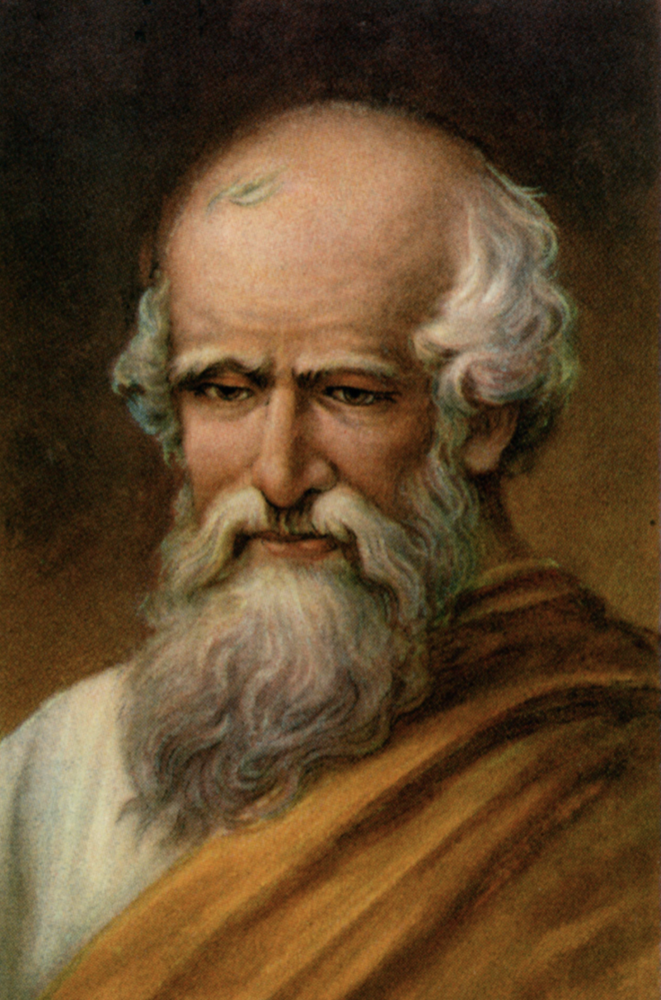
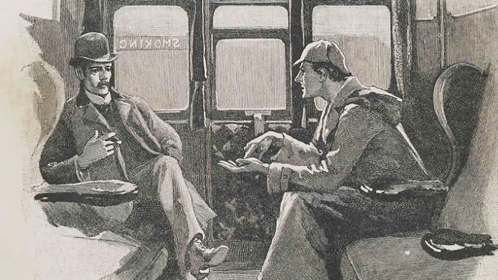
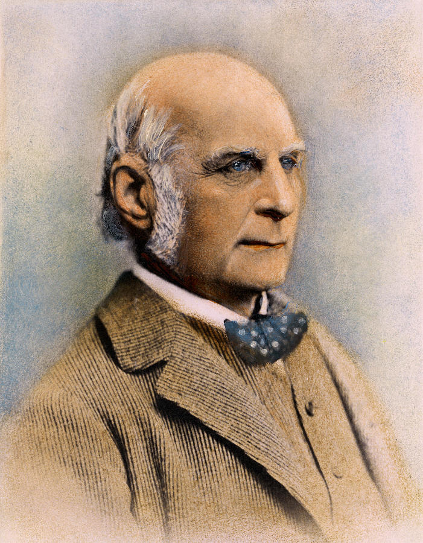
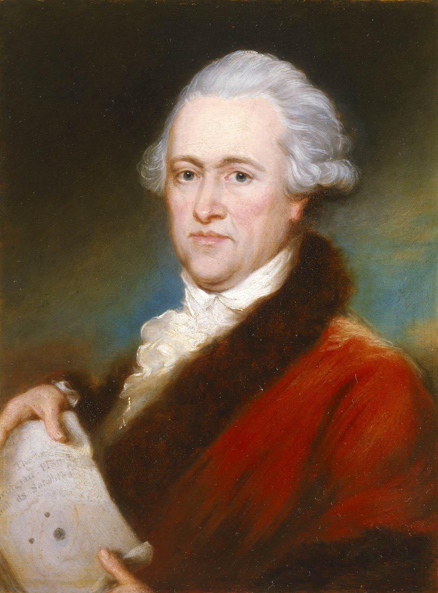
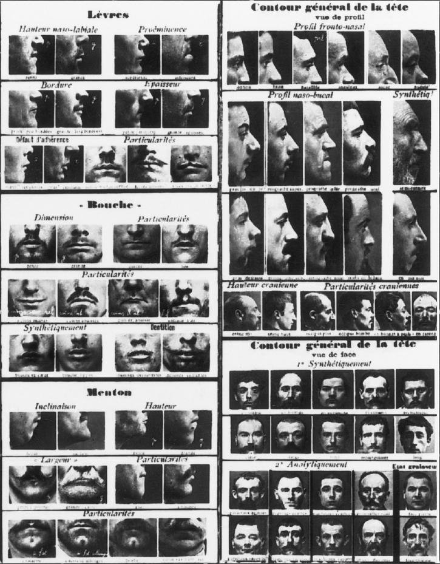
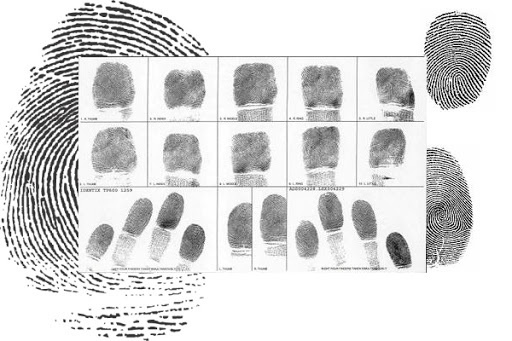
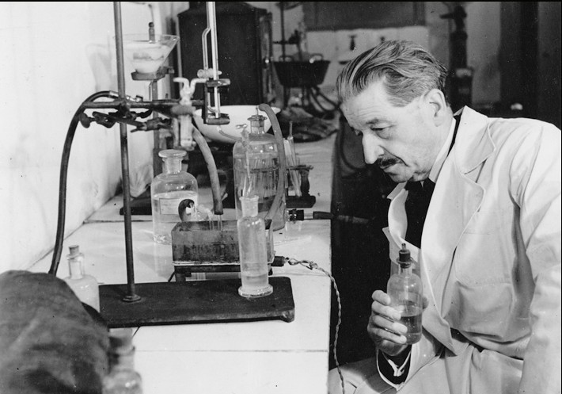
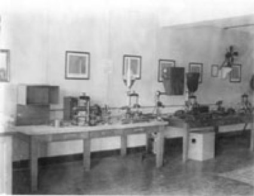

1 / 8
287-212 BC: Archimedes was probably first forensic scientist. He figured out that the King’s crown was not made of actual gold.

2 / 8
1859 –1930: Arthur Conan Doyle’s fictional story Sherlock Holmes first applied science to crime.

3 / 8
1822–1911: Sir Francis Galton discover the uniqueness of fingerprints.

4 / 8
1833–1918: William Herschel, a British official in India, used imprints fingers and hands as signatures on documents for people who could not write. Japan also use a thumb or fingerprint for contracts.

5 / 8
1890s: The French began to use the Bertillon System where it consisted of a photograph and 11 body measurements that included dimensions of the head, length of arms, legs, feet, hands, and so on. Bertillon claimed that the likelihood of two people having the same measurements for all 11 traits was less than one in 250 million.

6 / 8
1894: Fingerprints, which were easier to use and more unique (even identical twins have different fingerprints), were added to the Bertillon System.

7 / 8
1910: Edmond Locard established the first crime analysis laboratory. 10 years later, it was established throughout Europe.

8 / 8
1932: First crime analysis lab of United States opened in Los Angeles.

❮
❯